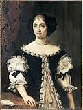

Niccolo Machiavelli


Seorang filsuf dan penulis asal Italia, Niccolo di Bernardo dei Machiavelli lahir di kota Florence, Italia. Meski melakukan berbagai profesi sepanjang hidupnya, Machiavelli lebih dikenal sebagai pendiri ilmu politik modern lewat bukunya yang paling terkenal Il Principe (1513). Machiavelli terlahir bukan dari keluarga berada. Ayahnya, Bernardo meski adalah seorang pakar hukum, di antara keluarganya dialah yang paling miskin. Akibat tak mampu membayar utang, ayah Machiavelli tak diizinkan menduduki jabatan publik apapun. Alhasil Bernardo harus hidup hemat di sebuah rumah kecil di luar kota Florence. Dia mendapatkan uang karena secara diam-diam mendapatkan nafkah dari profesinya. Meski miskin, Bernardo memiliki perpustakaan yang pasti menjadi santapan Machiavelli kecil. Namun, tak diketahui soal pendidikan Machiavelli di masa kecil.
Machiavelli mulai berkecimpung di dunia politik kota kelahirannya Florence saat dia berusia 29 tahun. Saat itu dia menjadi kepala semacam departemen pertahanan di zaman sekarang. Bagaimana Machiavelli bisa menggapai jabatan tinggi dalam usia muda tetap menjadi misteri. Kepaiawaian Machiavelli membuatnya mendapat kepercayaan Piero Soderini, hakim agung kota Florence. Saat itu Machiavelli bisa membujuk Soderini untuk mengurangi ketergantungan Florence terhadap tentara bayaran dan membentuk militer sendiri, yang tentu saja dipimpin Machiavelli. Machiavelli juga menjalankan peran diplomatik sebagai perwakilan kota Florence. Peran ini pula yang memungkinkan Machiavelli bertemu dengan tokoh-tokoh ternama kala itu seperti Raja Perancis Louis XII, Paus Julius II, dan Kaisar Roma Suci Maximilian I.
Istri |
Marietta CorsiniIstri Niccolò Machiavelli  |
| Ayah | Bernardo di Niccolò Machiavelli |
| Ibu | Bartolommea di Stefano Nelli |
| Saudara perempuan Niccolò Machiavelli | Spring Machiavelli |
| Putra Niccolò Machiavelli | Guido Machiavelli |
| Putra Niccolò Machiavelli | Piero Machiavelli |
| Putra Niccolò Machiavelli | Lodovico Machiavelli |
| Putri Niccolò Machiavelli | Primerana Machiavelli |
| Putri Niccolò Machiavelli | Baccina Machiavelli |
| Saudara laki-laki Niccolò Machiavelli | Totto Machiavelli |
| Putra Niccolò Machiavelli | Bernardo Machiavelli |
| Saudara perempuan Niccolò Machiavelli | Margherita Machiavelli |